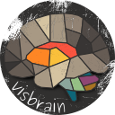

visbrain 
0.2.9
Brain
Sleep
Ndviz
Figure
Utils
I/O
Examples
Changelog and future directions
visbrain
Docs
»
Index
Index
A
|
B
|
C
|
D
|
F
|
I
|
L
|
M
|
N
|
P
|
Q
|
R
|
S
|
T
|
V
|
W
A
add_brain_template() (in module visbrain.utils.others)
add_connect() (visbrain.brain.user.BrainUserMethods method)
add_mesh() (visbrain.brain.user.BrainUserMethods method)
add_pictures() (visbrain.brain.user.BrainUserMethods method)
add_sources() (visbrain.brain.user.BrainUserMethods method)
add_time_series() (visbrain.brain.user.BrainUserMethods method)
add_volume() (visbrain.brain.user.BrainUserMethods method)
B
background_color() (visbrain.brain.user.BrainUserMethods method)
Brain (class in visbrain.brain.brain)
brain_control() (visbrain.brain.user.BrainUserMethods method)
brain_list() (visbrain.brain.user.BrainUserMethods method)
C
cbar_autoscale() (visbrain.brain.user.BrainUserMethods method)
cbar_control() (visbrain.brain.user.BrainUserMethods method)
cbar_export() (visbrain.brain.user.BrainUserMethods method)
cbar_list() (visbrain.brain.user.BrainUserMethods method)
cbar_select() (visbrain.brain.user.BrainUserMethods method)
colorbar_to_axis() (visbrain.figure.Figure method)
connect_control() (visbrain.brain.user.BrainUserMethods method)
convert_meshdata() (in module visbrain.utils.others)
cortical_projection() (visbrain.brain.user.BrainUserMethods method)
cortical_repartition() (visbrain.brain.user.BrainUserMethods method)
cross_sections_control() (visbrain.brain.user.BrainUserMethods method)
D
dialogLoad() (in module visbrain.io.dialog)
dialogSave() (in module visbrain.io.dialog)
F
Figure (class in visbrain.figure.figure)
I
is_mne_installed() (in module visbrain.io.dependencies)
is_nibabel_installed() (in module visbrain.io.dependencies)
L
load_config() (visbrain.brain.user.BrainUserMethods method)
load_config_json() (in module visbrain.io.rw_config)
M
mne_read_sleep() (in module visbrain.io.mneio)
N
Ndviz (class in visbrain.ndviz.ndviz)
P
pictures_control() (visbrain.brain.user.BrainUserMethods method)
Q
quit() (visbrain.brain.user.BrainUserMethods method)
R
remove_brain_template() (in module visbrain.utils.others)
roi_control() (visbrain.brain.user.BrainUserMethods method)
roi_light_reflection() (visbrain.brain.user.BrainUserMethods method)
roi_list() (visbrain.brain.user.BrainUserMethods method)
roi_opacity() (visbrain.brain.user.BrainUserMethods method)
rotate() (visbrain.brain.user.BrainUserMethods method)
S
save() (visbrain.figure.Figure method)
save_config() (visbrain.brain.user.BrainUserMethods method)
save_config_json() (in module visbrain.io.rw_config)
screenshot() (visbrain.brain.user.BrainUserMethods method)
shared_colorbar() (visbrain.figure.Figure method)
show() (visbrain.brain.brain.Brain method)
(visbrain.figure.Figure method)
Sleep (class in visbrain.sleep.sleep)
sources_colormap() (visbrain.brain.user.BrainUserMethods method)
sources_control() (visbrain.brain.user.BrainUserMethods method)
sources_display() (visbrain.brain.user.BrainUserMethods method)
sources_fit() (visbrain.brain.user.BrainUserMethods method)
sources_opacity() (visbrain.brain.user.BrainUserMethods method)
sources_to_convex_hull() (visbrain.brain.user.BrainUserMethods method)
T
time_series_control() (visbrain.brain.user.BrainUserMethods method)
V
volume_control() (visbrain.brain.user.BrainUserMethods method)
volume_list() (visbrain.brain.user.BrainUserMethods method)
W
write_fig_canvas() (in module visbrain.io.write_image)
write_fig_hyp() (in module visbrain.io.write_image)
write_fig_pyqt() (in module visbrain.io.write_image)